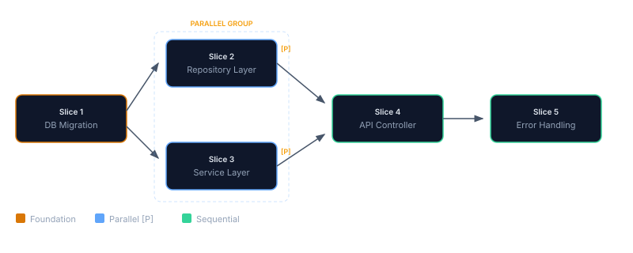

Writing Plans That Work
Here's what works and here's what breaks.
Plan Structure
Every hardened plan has these mandatory sections. The plan-hardener agent adds them automatically during Step 2 (or the Crucible interview adds them upstream during Smelt), but you should understand what each does and how to edit them:
| Section | Required? | Purpose |
|---|---|---|
| Scope Contract | Yes | In-scope paths, out-of-scope, forbidden actions |
| MUST Criteria | Yes | Non-negotiable outcomes (checkboxes) |
| SHOULD Criteria | Optional | Best-effort goals |
| Build / Test Commands | Yes v2.82.1+ | build-command + test-command, required by the Crucible critical-fields gate |
| Execution Slices | Yes | Checkpointed work chunks with gates and per-slice **Files in scope** |
| Branch Strategy | Recommended | Git branch name and merge approach |
| Rollback Plan | Recommended | How to undo if things go wrong |
**Files:** or **Files in scope** (the latter is what the Crucible/hardener now emit). Validation gates can be authored as either **Validation Gate** or **Exit gate**. The orchestrator parses both. Hand-authored plans following the convention should prefer the Files in scope + Exit gate pair to match generated output.
CRITICAL_FIELDS Gate v2.82.1+
Plans created via the Crucible smelter are now blocked from finalizing until every CRITICAL_FIELD is filled in. This eliminates the entire class of "TBD-laden plans that compile but can't run."
| Field | What it locks down | Example |
|---|---|---|
build-command | The exact command the orchestrator will run as the build gate per slice | dotnet build |
test-command | The exact command the orchestrator will run as the test gate | dotnet test |
scope | In-scope paths (per-slice Files in scope + plan-level scope) | src/services/**, tests/services/** |
validation-gates | At least one executable gate per slice | dotnet test --filter UserService |
forbidden-actions | Concrete file patterns or actions that are out-of-bounds | Do NOT modify src/database/migrations/ |
rollback | How to undo the change cleanly | git revert <commit> or named feature flag |
If any CRITICAL_FIELD is missing, forge_crucible_finalize returns 409 with CRITICAL_FIELDS_MISSING and a criticalGaps[] array pointing at the unresolved fields. The Crucible interview adds a question for each missing field automatically, the feature lane now asks 7 questions (was 6); the tweak lane asks 4 (was 3).
The build/test commands are inferred from your repo when possible (via inferRepoCommands, checks package.json, *.csproj, pyproject.toml, Cargo.toml, etc.) so most projects don't have to type them by hand.
docs/plans/Phase-NN.md instead of using the Crucible, the gate doesn't apply. But you still want to fill these fields in, the orchestrator reads build-command and test-command from the plan frontmatter when running gates that don't specify a full command inline.
Writing a Good Scope Contract
The scope contract is the most important section. It tells the AI exactly what files it can touch, and what's off-limits.
Good: Tight Scope
## Scope Contract
**In Scope**: src/services/UserService.cs, src/repositories/UserRepository.cs,
tests/services/UserServiceTests.cs, tests/repositories/UserRepositoryTests.cs
**Out of Scope**: frontend/**, deployment/**, docs/** (except this plan)
**Forbidden Actions**:
- Do NOT modify src/database/migrations/ (migration is a separate phase)
- Do NOT change AppSettings.json connection strings
- Do NOT add NuGet packages without explicit approvalBad: Loose Scope
## Scope Contract
**In Scope**: anything related to users
**Out of Scope**: nothing specific
**Forbidden Actions**: don't break things"Anything related to users" gives the AI free rein to refactor 20 files. "Don't break things" isn't enforceable. Be specific about paths, and list forbidden actions as concrete file patterns. That's how you get lasagna code, clean layers, each with a purpose, instead of spaghetti where everything touches everything.
Slicing Strategy
Before the rules, the worked example. The same feature, add a User Profile endpoint, planned two ways:
Slice 1, Add User Profile feature [≥90 min, unbounded]
• Database migration
• Repository
• Service
• Controller
• TestsWhen the gate fails you have no idea which layer broke, the migration can't roll back cleanly without nuking the service work, and the reviewer is reading a 12-file diff with no checkpoint to anchor against.
Slice 1, Migration + model [30 min]
Slice 2, Repository + unit tests [45 min]
Slice 3, Service + business-logic tests [60 min]
Slice 4, Controller + integration tests [45 min]Each slice ends at a real checkpoint. A migration failure stops Slice 1 cleanly. A controller bug at Slice 4 doesn't touch the migration in Slice 1. The reviewer reads four small diffs, each scoped to one architectural layer.
![Slicing strategy: side-by-side comparison of tight scope (left, green) vs loose scope (right, red). Tight scope shows 3 slices each touching one architectural layer (Controller, Service, Repository) with concrete forbidden actions (no migrations, no AppSettings.json, no new NuGet packages). Loose scope shows one mega-slice mixing 4 layers (controllers + services + repositories + migrations) with the consequences: test fails make it impossible to isolate which layer broke, mid-slice migrations can't roll back cleanly, reviewers can't audit one boundary at a time. Forbidden actions section shows 'don't break things' as struck-through (unenforceable). Bottom rule: one layer per slice, scope = exact file paths, forbidden actions = concrete patterns. If you can't write the gate command, the slice is too broad.](assets/diagrams/slicing-strategy-antipatterns.svg)
Slices are 30–120 minute chunks of work. Each slice should produce a commit-worthy change, the "one PR" rule.
Rules of Thumb
- One layer per slice, don't mix database migration with API controller in the same slice
- Build on foundations, create the model/migration first, then the repository, then the service, then the controller
- Tests with the code, include tests in the same slice as the code they test (not a separate "add tests" slice at the end)
- 30 minutes minimum, slices shorter than this have too much gate overhead
- 120 minutes maximum, slices longer than this accumulate too much risk before the next checkpoint
Example: 6-Slice Plan
Slice 1, Database migration + model [30 min]
Slice 2, Repository + unit tests [45 min]
Slice 3, Service layer + business logic tests [60 min]
Slice 4, API controller + integration tests [45 min]
Slice 5, Error handling + edge case tests [30 min]
Slice 6, Documentation + cleanup [30 min]Validation Gates
Gates are the quality checkpoints between slices. A gate must be a concrete, executable command, not a human judgment call.
Good Gates
**Gate**:
dotnet build # zero errors
dotnet test --filter "UserProfile" # 6+ tests pass
grep -rn "string interpolation" src/ # zero hits (security)Bad Gates
**Gate**: "tests pass" ← Which tests? How many?
**Gate**: "code looks clean" ← Not executable
**Gate**: "review the changes" ← Human-dependent, blocks automationParallel Execution
Mark slices that can run concurrently with the [P] tag. Add dependency declarations when slices must run in order:
### Slice 1, Database Migration [30 min]
...
### Slice 2, Repository Layer [P] [depends: Slice 1] [scope: src/repos/**]
...
### Slice 3, Service Layer [P] [depends: Slice 1] [scope: src/services/**]
...
### Slice 4, API Controller [depends: Slice 2, Slice 3]
...Slices 2 and 3 both depend on Slice 1 (the migration) but are independent of each other, they run in parallel. Slice 4 waits for both to finish. The orchestrator builds a DAG (directed acyclic graph) and schedules accordingly.

[P] when slices touch different [scope: ...] paths.
Stop Conditions
Stop conditions tell the AI when to halt instead of trying to work around a failure:
**Stop if**: Build fails with compilation error
**Stop if**: Any existing test regresses (not just new tests)
**Stop if**: Migration produces data loss warning
**Stop if**: Security scan finds HIGH or CRITICAL vulnerabilityWithout stop conditions, the AI may try to "fix" a build failure by removing code, or skip a failing test by commenting it out. Stop conditions force it to report the problem instead of hiding it.
Context Files
Each slice can list which instruction files are relevant. Don't load all 18, load only what's needed:
### Slice 1, Database Migration
**Context**: database.instructions.md, security.instructions.md
### Slice 4, API Controller
**Context**: api-patterns.instructions.md, auth.instructions.md, errorhandling.instructions.mdThis keeps the AI's context window focused. A database slice doesn't need caching instructions; a controller slice doesn't need migration patterns.
Common Mistakes
| Mistake | What Happens | Fix |
|---|---|---|
| Scope too loose | AI refactors 20 files instead of 3 | List specific file paths, not categories |
| Scope too tight | AI can't create necessary helper files | Include reasonable wildcards: src/services/** |
| No stop conditions | AI works around failures silently | Add "Stop if" to every slice |
| Vague gates | Gate "passes" without actually validating | Use executable commands with expected counts |
| Tests in last slice | 5 slices of code, then discover it's untestable | Include tests alongside each code slice |
| Giant slices | 120+ min of work before first checkpoint | Break into 30–60 min focused chunks |
| Missing rollback | Panic when something breaks in production | Add rollback plan with specific git revert commands |
Plan Templates
Eight language-specific plan examples ship with Plan Forge. Use them as starting points:
| Stack | File | Features Demonstrated |
|---|---|---|
| .NET | Phase-DOTNET-EXAMPLE.md | RLS, Dapper, Blazor, GraphQL, 12 slices |
| TypeScript | Phase-TYPESCRIPT-EXAMPLE.md | Express, Prisma, Vitest |
| Python | Phase-PYTHON-EXAMPLE.md | FastAPI, SQLAlchemy, Pytest |
| Java | Phase-JAVA-EXAMPLE.md | Spring Boot, JPA, JUnit |
| Go | Phase-GO-EXAMPLE.md | Chi router, sqlx, testing |
| Swift | Phase-SWIFT-EXAMPLE.md | Vapor, Fluent, XCTest |
| Rust | Phase-RUST-EXAMPLE.md | Axum, sqlx, Cargo test |
| PHP | Phase-PHP-EXAMPLE.md | Laravel, Eloquent, PHPUnit |
All examples live in docs/plans/examples/.
📄 Full reference: AI-Plan-Hardening-Runbook.md on GitHub